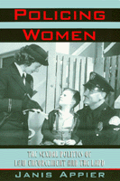

How women expanded policework and unwittingly created the conditions for more aggressive policing
How women expanded policework and unwittingly created the conditions for more aggressive policing


 How women expanded policework and unwittingly created the conditions for more aggressive policing
How women expanded policework and unwittingly created the conditions for more aggressive policing

|  |
Policing WomenThe Sexual Politics of Law Enforcement and the LAPDJanis Appierpaper EAN: 978-1-56639-560-1 (ISBN: 1-56639-560-7) |
"This book stands out in many ways. [It] is very well researched, interesting to read, and would be an excellent foundation text for a course in women's history. It would also be useful as a supplemental text in a variety of women's studies, history, and sociology courses."
—National Women's Studies Association Journal
Many of us take the presence of policewomen on patrol and in investigative roles for granted. Realistic dramas and comedies in the movies and on television show women officers performing the same duties as men on the force. This visibility tells us nothing about the hostility and controversy that have beset police women since they were first hired by police departments in the 1910's. Author Janis Appier traces the origins of women in police work, explaining how pioneer policewomen's struggles to gain secure footholds in big city police departments ironically helped to make modern policework one of the most male dominated occupations in the United States.
With a new vision of non-coercive police work and crime prevention, progressive reformers exerted political and social pressure to create positions for female officers dedicated to guiding and protecting juveniles and women. Women reformers pointed to changing sexual mores among working-class female youth to emphasize the need for a new approach to policing.
The policewomen who undertook the work of counseling sexually active teenage girls and their families saw themselves as helping young people achieve moral equilibrium during a period in which standards of conduct were in flux. In the Los Angeles Police Department, the first to hire women, this social work was primarily the responsibility of the City Mother's Bureau; in other major cities, policewomen's roles were similarly constructed as maternalistic. Scrutinizing case records, public statements, and departmental policies governing policewomen, Appier shows how female officers handled the complex gender politics of their work with the public and within their departments.
Appier reveals that many of these pioneering policewomen succeeded in expanding the scope of policework and carving out a rewarding professional niche, despite continued attempts to oust them or limit their sphere of action. But this advancement was short-lived; within a generation a masculinized model of crime fighting took hold, and policewomen's authority eroded.
Excerpt available at www.temple.edu/tempress
"Policing Women offers new information and new interpretations that will appeal to readers in many fields: courses in law enforcement, women's studies/gender, women in criminal justice/women in crime, women's history. Well written and organized, it provides a fine discussion of national issues as a background for the origins of women in policing and the crime prevention model."
—Clarice Feinman, Professor Emerita, College of New Jersey
"In this engaging examination of the history of women in law enforcement, Janis Appier recounts the struggles of pioneer policewomen to 'redefine police work as a job a woman could do as well as, if not better than, a man.' ...Writing in a feminist voice, Appier takes the reader on a fascinating historical journey that documents both the birth of the movement for women in policing and the social and political forces that coalesced to produce the movement."
—Law & Politics Book Review
"...provides useful historical context for understanding the marginalization of women in law enforcement today... Overall, this work demonstrates that women fighting for change in police departments everywhere have much to learn from the pioneer policewomen who preceded them."
—Contemporary Sociology
"...an intriguing history of policing in which sexual politics drives the narrative.... Appier's book would work well in American history courses as well as interdisciplinary courses in criminal justice, women's studies, and sociology. It is convincingly researched and compellingly written."
—The Journal of American History
"Documenting women's activities in individual police departments is overdue..."
—The American Historical Review
"Dr. Appier is very adept at analyzing the motives, successes, and problems which these first police women encountered. She is also quite perceptive about the reasons for the eventual failure of these pioneers to transmit their values and programs to the second generation of female officers who began to enter police departments in the thirties.... This is a well-written and informative study which should encourage others to examine with equal care the role of women in policing in other cities and in other time periods."
—Journal of Social History
"This book provides a wealth of information about pioneer policewomen and the problems they faced in a male-dominated institution. Appier analyzes excellently the demise of the gendered dimension of police work that pioneers worked so hard to establish."
—Journal of Women's History
Acknowledgments
Introduction: "A Man's Job": Gender and Police Work
Part I: Gender, the Police, and Criminal Justice Reform
1. "All over the Country There Is a Spirit of Cleaning Up": The Female Reform Tradition and the Origins of the Movement for Women Police
2. Preventive Justice: The Campaign for Women Police
Part II: Women Police in Los Angeles
3. "Just Mothers to Everybody": The City Mother's Bureau of Los Angeles, 1914-1929
4. Double Lives: Police Women of the LAPD Juvenile Bureau
5. From City Mother to "Sgt. Tits": The Death of the Crime Prevention Model
Epilogue: Out for Justice: The Legacy of the Crime Control Model
Notes
Index
 | Janis Appier is Assistant Professor of History at Ohio State University. She has written extensively about women and criminal justice. |
American Studies
Women's Studies
Law and Criminology
Critical Perspectives on the Past, edited by Susan Porter Benson, Stephen Brier, and Roy Rosenzweig.
Critical Perspectives on the Past, edited by Susan Porter Benson, Stephen Brier, and Roy Rosenzweig, is concerned with the traditional and nontraditional ways in which historical ideas are formed. In its attentiveness to issues of race, class, and gender and to the role of human agency in shaping events, the series is as critical of traditional historical method as content. Emphasizing that history is itself an interpretation of material events, the series demonstrates that the historian's choices of subject, narrative technique, and documentation are politically as well as intellectually constructed.
© 2015 Temple University. All Rights Reserved. This page: http://www.temple.edu/tempress/titles/1272_reg.html.